06
Integração de dados
- A geração e análise de dados são partes essenciais da biologia de sistemas.
- Grandes quantidades de dados ômicos podem ser gerados de forma rápida e econômica, graças ao desenvolvimento de técnicas modernas de medição de alto rendimento.
- Sua interpretação é, no entanto, desafiadora por causa da alta dimensionalidade e dos níveis freqüentemente substanciais de ruído.
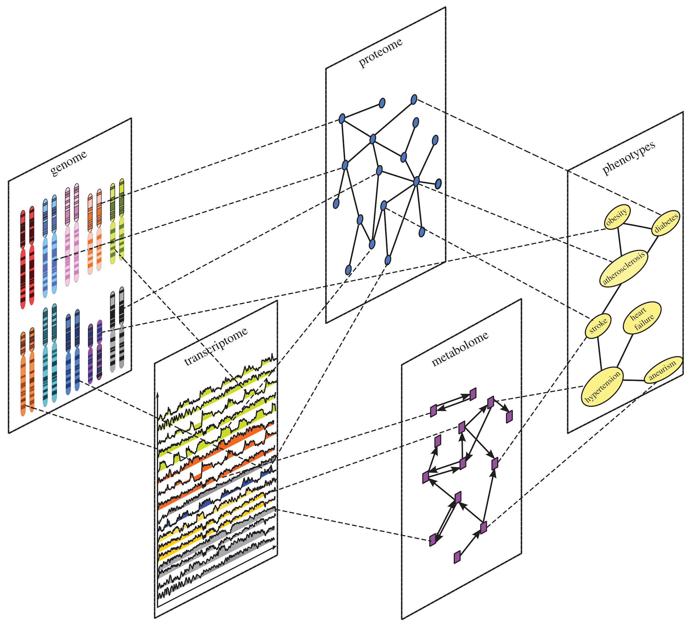
- A integração é necessária para capturar a complexidade dos sistemas biológicos, onde diferentes camadas (DNA, RNA, proteína, metabólito) interagem de forma não linear.
- O objetivo final é construir modelos preditivos e entender mecanismos emergentes que não são visíveis ao analisar uma única camada ômica.
- Exemplo: Alterações no transcriptoma (RNA) podem não se traduzir em alterações no proteoma devido a regulação pós-traducional. Somente integrando ambas as camadas você entende verdadeiramente o estado funcional da célula.
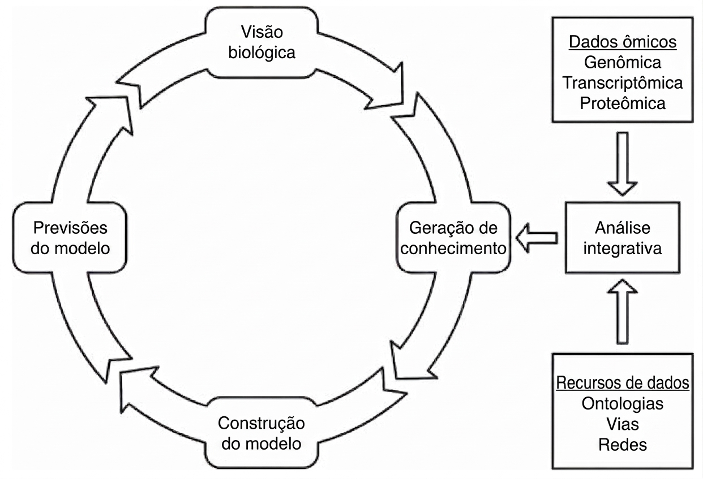
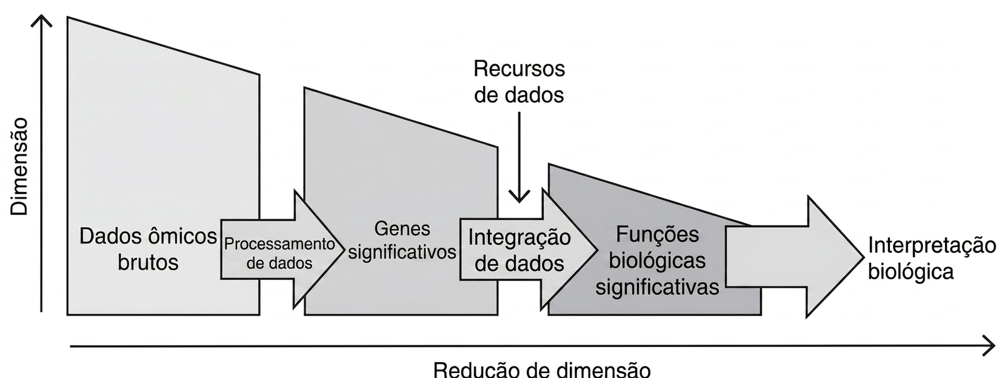
Quando há integração dos dados há redução de dimensionalidade
O processo de análise integrativa pode ser dividido em dois passos principais: processamento dos dados e integração dos dados.
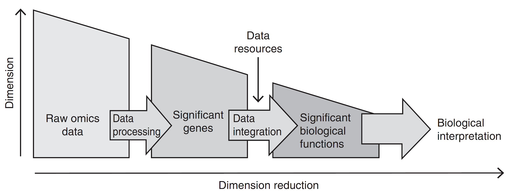
Processamento de dados
Processamento de dados (cont.)
Aplica ferramentas computacionais e estatísticas aos dados ômicos de alta dimensionalidade
Eliminar erros e ruídos
Identificar genes e outros componentes que contêm informações significativas para o experimento.
Processamento de dados: etapas
Controle de Qualidade, Pré-processamento e Limpeza.
Alinhamento/Mapeamento e Quantificação
Normalização
Identificação de Características Significativas
Processamento de dados: etapas (cont.)
- Controle de Qualidade, Pré-processamento e Limpeza.
Inspeção sistemática dos dados brutos para identificar e, se possível, corrigir vieses técnicos e erros. A aplicação de algoritmos para limpar os dados com base nos resultados do QC.
Alinhamento/Mapeamento e Quantificação
Normalização
Identificação de Características Significativas
Processamento de dados: etapas (cont.)
Controle de Qualidade, Pré-processamento e Limpeza.
Alinhamento/Mapeamento e Quantificação
O processo de alinhar cada read (sequência lida) a sua posição correta em um genoma de referência. Transformar os dados alinhados em valores numéricos que representam a abundância de cada entidade biológica (gene, transcrito, proteína).
Normalização
Identificação de Características Significativas
Processamento de dados: etapas (cont.)
Controle de Qualidade, Pré-processamento e Limpeza.
Alinhamento/Mapeamento e Quantificação
Normalização
Ajustar os dados quantificados para remover vieses técnicos sistemáticos que impedem comparações justas entre amostras.
- Identificação de Características Significativas
Processamento de dados: etapas (cont.)
Controle de Qualidade, Pré-processamento e Limpeza.
Alinhamento/Mapeamento e Quantificação
Normalização
Identificação de Características Significativas
A aplicação de testes estatísticos para distinguir o sinal biológico real do ruído aleatório inerente a qualquer experimento de alto rendimento.
Controle de Qualidade (QC), Pré-processamento e Limpeza
Passo vital e deve sempre ser feito independente do tipo de dados
- DNA
- RNA
- Proteínas
- Metabólitos
- Doenças
- …
Controle de Qualidade, Pré-processamento e Limpeza (cont.)
- A natureza dos erros é fortemente dependente da técnica e de suas propriedades bioquímicas, e os métodos para avaliação da qualidade devem, portanto, ser selecionados com base na plataforma de medição aplicada.
- DNA-seq
- Baixa qualidade no final da leitura
- Substituições, inserções e deleções
- Adaptadores
- RNA-seq
- Todas as anteriores
- Excesso de rRNA
- Espectrometria de massa
- Espectros de baixa qualidade
- O que podem dar nenhum dado ou falso-positivos
| Método | Propósito | Tipo de dado |
|---|---|---|
| Garantia de qualidade e filtragem | ||
| FASTX toolkit | Controle de qualidade e filtragem | Genômica, transcritômica |
| TrimGalore | Filtragem por qualidade e remoção de adaptadores | Genômica, transcritômica |
| NGS QC Toolkit | Controle de qualidade e filtragem | Genômica, transcritômica |
| Spectrum quality | Filtragem de Espectro de MS | Proteômica |
Quantificação
- O passo de quantificação transforma o dado que já passou por uma avaliação de qualidade em dado quantitativo que descreve a abundância de variantes genéticas, transcritos ou proteínas.
- DNA
- Mapeamento das leituras em uma referência e determinação de variantes pela verificação do alinhamento.
- RNA
- Mapeamento das leituras em regiões do genoma anotadas como genes. Posterior contagem da quantidade de alinhamentos dentro de uma região codificante.
- Proteína
- Comparação com espectros padrões e o quanto esse espectro é detectado.
| Método | Propósito | Tipo de dado |
|---|---|---|
| Quantificação | ||
| Bowtie2 | Mapeamento de leituras na referência | Genômica, transcritômica |
| Star | Mapeamento de leituras ciente de splicing | Transcritômica |
| MASCOT | Mapeamento de espectros de massa ao banco de dados | Proteômica |
| InsPecT | Mapeamento de espectros de massa ao banco de dados | Proteômica |
Normalização
Os dados ômicos exibem grandes variações e vieses, dos quais uma parte substancial é de natureza técnica introduzida pelas técnicas de medição e as etapas experimentais sensíveis necessárias para a preparação da amostra. O objetivo da normalização é remover essa variabilidade indesejada para tornar o dado mais uniforme e comparável.
Isto é especialmente importante para transcriptômica e proteômica, onde os dados são frequentemente gerados em um cenário comparativo usando múltiplas replicatas técnicas e/ou biológicas.
Normalização (cont.)
- RNA
- FPKM/RPKM: Fragmentos/Reads por kilobase por milhão de reads mapeados.
- Proteína
- Métodos de regressão.
- Escala baseada na intensidade total do íon em relação ao comprimento total da proteína
| Método | Propósito | Tipo de dado |
|---|---|---|
| Normalização | ||
| RPKM/FPKM | Normalização da abundância de transcritos | Transcritômica |
| Normalização por regressão linear | Normalização de picos do espectro de massas | Proteômica |
Análise estatística: Situação
Os dados ômicos são de alta dimensionalidade, onde milhares de características (por exemplo, variantes genéticas, transcritos ou proteínas) são medidas simultaneamente e onde apenas uma minoria delas contém informações que são valiosas para o estudo.
Análise estatística: Objetivo
A análise estatística visa reduzir a dimensão dos dados, distinguindo entre as características biologicamente relevantes e as características que contêm principalmente ruído.
| Dados Ômicos Brutos | Pré-processamento | Quantificação | Normalização | Análise estatística |
|---|---|---|---|---|
| Resequenciamento Genômico | Filtragem e trimagem de leituras | Mapeamento de leituras com um genoma de referência | Chamada de polimorfismos e variantes estrutural | |
| RNA-Seq | Filtragem e trimagem de leituras | Mapeamento ciente de splicing e contagem de leituras | Normalização intra e inter amostras | Identificação de transcritos diferencialmente abundantes |
| Proteômica por MS | Remoção de espectros de baixa qualidade | Comparação do espectro com banco de dados | Normalização intra e inter amostras | Identificação de proteínas diferencialmente abundantes |
Integração dos dados
Integração dos dados (cont.)
Depois dos passo de processamento dos dados, obtemos uma lista de genes relevantes que podem nos direcionar a resposta biológica que buscamos.
Integração dos dados (cont.)
A lista de genes é usada para identificar funções e caminhos relevantes integrando os dados com uma base comum construída usando informações biológicas estabelecidas coletadas de vários recursos e bancos de dados.
O resultado, que é baseado na análise combinada dos genes com propriedades funcionais similares, tem uma dimensão substancialmente reduzida, o que facilita consideravelmente sua interpretação.
Integração dos dados (cont.)
- O conjunto reduzido de genes, transcritos ou proteínas obtidos anteriormente são anotados com um vocabulário comum
- Gene Ontology
- KEGG/KOG
- Desta maneira, é possível reunir todos aqueles genes/transcritos/proteínas que fazem parte da mesma resposta biológica.
- Isso também serve para associar genes, transcrito ou proteínas com suas respectivas contrapartes em outros experimentos.
Análise de Conjunto de Genes - Gene Set Analysis
Método usado para interpretar resultados de experimentos de larga escala focado em grupos de genes que compartilham uma característica biológica comum.
O objetivo principal é responder à pergunta:
“Dada uma lista de genes que mudaram em um experimento, quais os processos ou vias biológicas estão sendo afetados de forma significativa?”
Análise de Conjunto de Genes - Gene Set Analysis (cont.)
- Precisamos de uma estatística para cada gene que defina a mudança da expressão
- Definição de função de acordo com algum banco de dados
- Cálculo de score de enriquecimento
- De acordo com o valor estatístico, quem tem as maiores mudanças e quem não tem mudança aparente.
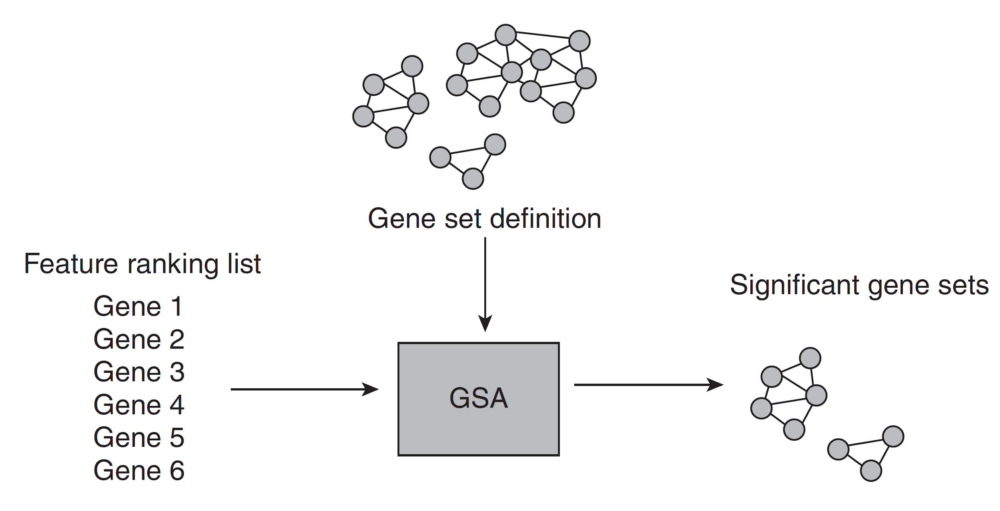
Integração
- Antecipada (ou completa)
- Combina os conjuntos de dados de tipos diferentes em um único conjunto de dados.
- Requer uma transformação dos conjuntos de dados em uma representação comum, que em alguns casos pode resultar em perda de informação .
- A Integração Antecipada funde os conjuntos de dados brutos ou de características em uma única matriz combinada antes da aplicação de qualquer algoritmo de modelagem. Embora conceitualmente simples, este método requer a transformação de dados heterogêneos em um espaço comum , o que frequentemente introduz ruído, perda de informação e o desafio da dimensionalidade (p >> n), podendo mascarar sinais biológicos sutis.
Integração (cont.)
- Tardia (ou de decisão)
- Cria modelos para cada conjunto de dados separadamente
- Combina os modelos em um modelo unificado.
- Construir modelos a partir de cada conjunto de dados isoladamente dos outros desconsidera suas relações mútuas . A o modelar cada conjunto isoladamente, as relações entre as diferentes camadas de dados (ex: como a metilação do DNA regula a expressão gênica) são ignoradas, perdendo a sinergia central da Biologia de Sistemas.
Integração (cont.)
- Intermediária (ou parcial)
- A Integração Intermediária infere um modelo conjunto que aprende uma representação compartilhada ou latente a partir de todos os conjuntos de dados simultaneamente. Esta abordagem modela explicitamente as relações entre as diferentes modalidades de dados, capturando a sinergia entre elas. Por isso, é frequentemente a mais indicada para a Biologia de Sistemas, podendo levar a uma melhor precisão preditiva e a descobertas biológicas mais ricas. No entanto, ela ainda envolve uma transformação dos dados para um espaço latente, cuja qualidade depende criticamente do algoritmo utilizado.
Integração (cont.)
Integrando redes * Homogêneo * Quando as duas redes a serem integradas possuem o mesmo tipo de vértices mas diferentes tipos de arestas. * Heterogêneo * Quando as duas redes a serem integradas possuem como vértices e arestas tipos diferentes de dados e relações.
Métodos de integração: Projeção de Rede
Usado para integrar redes heterogêneas. Por exemplo, projetar uma rede Fármaco-Alvo em uma rede Alvo-Doença para inferir uma nova rede Fármaco-Doença.
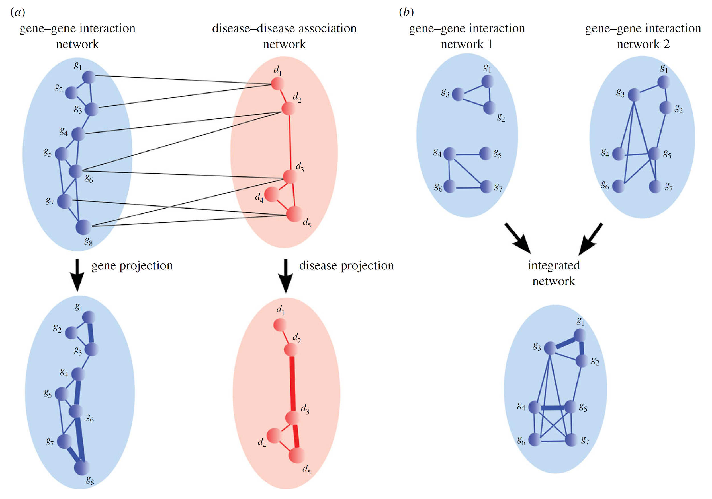
• Nielsen, J., Hohmann, S., & A, R. (2017). Systems Biology. https://doi.org/10.978.352769/6161. Capítulo 1
• Methods for biological data integration: perspectives and challenges (artigo no Mendeley)
• https://towardsdatascience.com/network-learning-from-network-propagation-to-graph-convolution-eb3c62d09de8Network propagation: a universal amplifier of genetic associations
Métodos de integração: Propagação de informação
Técnica poderosa para difundir informação (ex: escores de genes associados a uma doença) através de uma rede integrada, permitindo a priorização de novos genes ou fármacos.
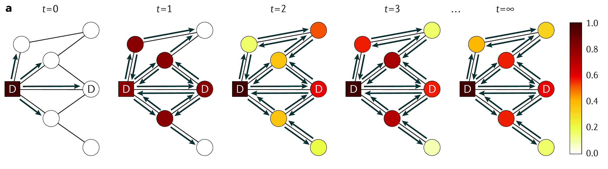
Métodos de integração: baseado em redes
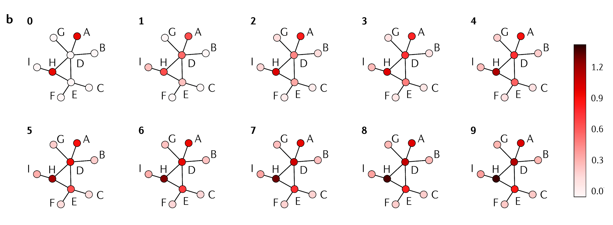
Métodos de integração: baseado em redes (cont.)
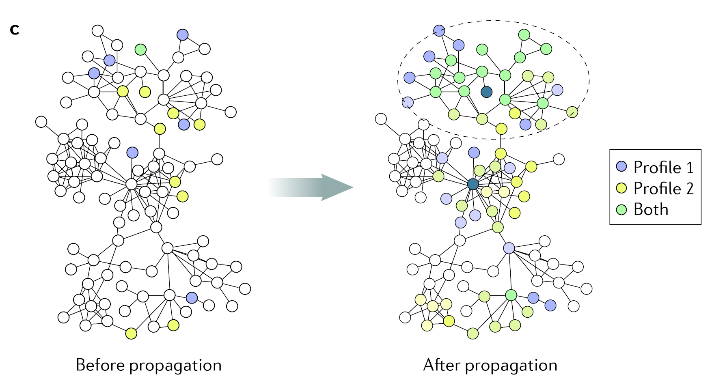
Métodos de integração: bayesiano
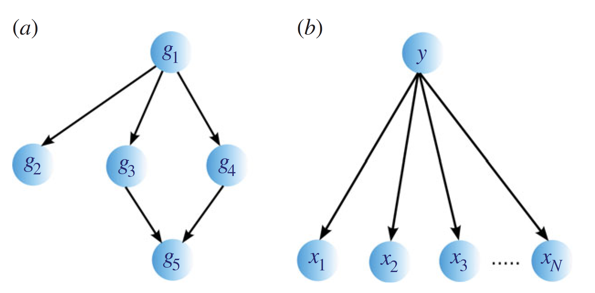
Constroem modelos probabilísticos que explicitamente representam as dependências entre diferentes tipos de dados (ex: genótipo -> expressão gênica -> fenótipo).
Métodos de integração: baseado em kernels. Mudanças de dimensionalidade
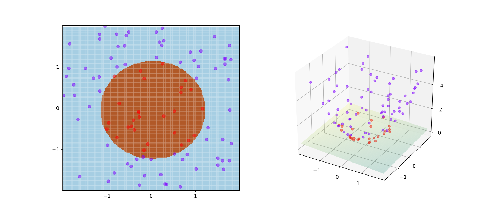
Métodos de integração: NMF
Fatoração de Matriz não-Negativa (Non-negative Matrix Factorization)
- Método de ranqueamento e clusterização.
- Encontrar padrões por aproximações iterativas.
- Onde a matriz de dados é fatorada em duas outras. Uma delas dá o grupo ao qual um dado pertence de acordo com padrões.